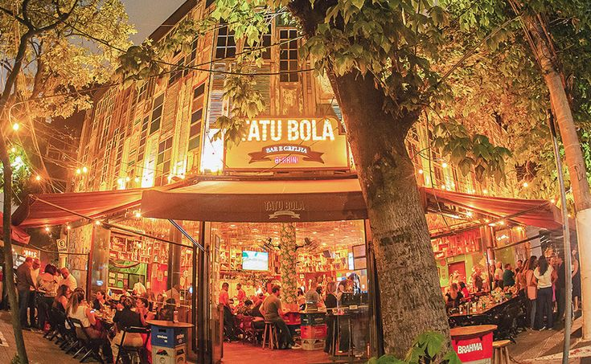

Sobre nós

Bem-vindo ao Rota Gastronômica, seu guia definitivo para explorar os melhores restaurantes e barzinhos da cidade! Nosso objetivo é conectar você a experiências gastronômicas incríveis, apresentando desde os estabelecimentos mais tradicionais até os cantinhos escondidos que valem a pena conhecer.
Aqui, você encontra recomendações cuidadosas, dicas exclusivas e informações detalhadas para tornar cada saída
uma experiência única. Seja para um jantar especial, um happy hour descontraído ou para descobrir novos
sabores, estamos aqui para ajudar você a encontrar o lugar perfeito!
Explore, descubra e saboreie com o Rota Gastronômica!
Nosso Estabalecimento
Veja no mapa abaixo como nos encontrar!